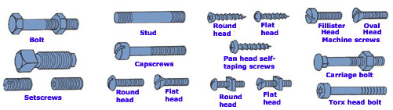
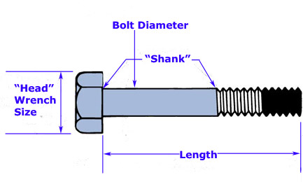

Please use this page as a reference on how to identify your prefered items.
Fasteners are used to secure or hold parts of something together. One type of fastener most commonly used is the threaded fastener.
Used to loosen and tighten the bolt.
Measured across the threaded area.
The number of threads per inch.
The distance in millimeters between two adjacent threads.

Many different types of washers are used with fasteners.
The type of washer defines the purpose of the washer.